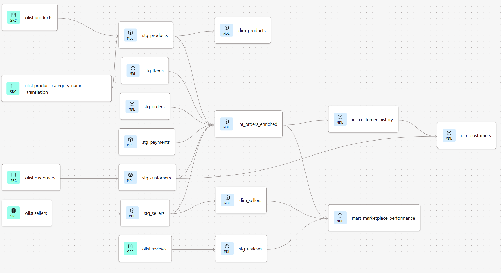

E-Commerce Marketplace Analytics 🇧🇷
An end-to-end analytics engineering pipeline transforming 100k+ raw e-commerce orders into production-ready data marts using dbt and Google BigQuery.
View on GitHub
Context
The Brazilian E-Commerce Public Dataset is a rich, multi-table dataset representing a complex multi-sided marketplace. Raw data includes orders, payments, reviews, products, sellers, customers, and geolocation information—each requiring reconciliation to unlock meaningful business insights.
The Challenge: Transform disparate, normalized source data into a unified analytical layer that enables stakeholders to answer critical business questions about seller performance, customer behavior, and regional revenue trends.
Technical Stack
Data Transformation
- dbt Core - SQL-based transformation framework
- Jinja - Templating for dynamic SQL
- YAML - Schema definitions & testing
Data Warehouse
- Google BigQuery - Cloud data warehouse
- SQL - Complex analytical queries
Architecture
- Medallion Architecture - Bronze/Silver/Gold layers
- Star Schema - Dimensional modeling
Action
Implemented a Medallion Architecture to progressively refine raw data into business-ready analytics:
1. Staging Layer (stg_)
Created cleaned, type-cast 1:1 copies of 8 source tables:
stg_orders- Order timestamps and statusstg_items- Line items with pricingstg_payments- Payment methods and installmentsstg_reviews- Customer ratings and commentsstg_customers- Customer demographicsstg_sellers- Seller informationstg_products- Product catalogstg_geolocation- Geographic coordinates
2. Intermediate Layer (int_)
Built complex join logic to enrich and denormalize data:
int_orders_enriched- Orders joined with items, payments, and reviewsint_customer_history- Customer purchase patterns and lifetime metrics
3. Marts Layer (dim_ / fact_)
Designed Star Schema optimized for BI tools:
dim_customers- Customer dimension with CLV metricsdim_products- Product dimension with categoriesdim_sellers- Seller dimension with performance indicatorsmart_marketplace_performance- Core fact table with revenue, delays, and satisfaction metrics
Data Lineage (DAG)
The Directed Acyclic Graph (DAG) below shows the complete dependency chain from raw sources to final marts. dbt automatically generates this lineage, enabling impact analysis and documentation.
Key Business Metrics Unlocked
📊 Revenue Analytics
- Regional revenue distribution
- Payment method analysis
- Installment patterns
👥 Customer Insights
- Customer Lifetime Value (CLV)
- Purchase frequency
- Geographic distribution
🚚 Seller Performance
- Seller delay rates
- Average review scores
- Order fulfillment metrics
Result
- 100,000+ orders transformed through the pipeline
- 18 dbt models across 3 architectural layers
- Production-ready data marts optimized for Looker, Tableau, or Power BI
- Automated testing with uniqueness, not-null, and relationship tests
- Full documentation with auto-generated dbt docs and lineage graphs
- Modular, maintainable SQL with Jinja macros for reusability
Learning
Analytics Engineering Best Practices: This project reinforced the value of treating data transformations as software—with version control, testing, and documentation baked into the workflow.
Medallion Architecture: Learned how progressive data refinement (Bronze → Silver → Gold) enables both flexibility for data engineers and simplicity for analysts.
dbt Ecosystem: Gained hands-on experience with dbt's testing framework, incremental models, and documentation generation—essential skills for modern data stacks.
Future Enhancement: Would implement incremental models for the staging layer and add CI/CD with GitHub Actions for automated testing on pull requests.
Repository Structure
olist-marketplace-analytics/
├── analyses/ # Ad-hoc SQL analysis
├── assets/ # Project images and diagrams
├── docs/ # Documentation resources
├── macros/ # Custom Jinja functions
├── models/
│ ├── staging/ # Raw 1:1 copies of sources
│ │ ├── _schema.yml # Tests & Documentation
│ │ └── stg_*.sql # Cleaning logic
│ ├── intermediate/ # Logic & Joins
│ │ ├── int_orders_enriched.sql
│ │ └── int_customer_history.sql
│ └── marts/ # Business Logic (The "Product")
│ ├── core/ # Dimensions
│ └── finance/ # Fact tables
├── tests/ # Custom data quality tests
├── dbt_project.yml # Main dbt configuration
└── README.md # Project documentation